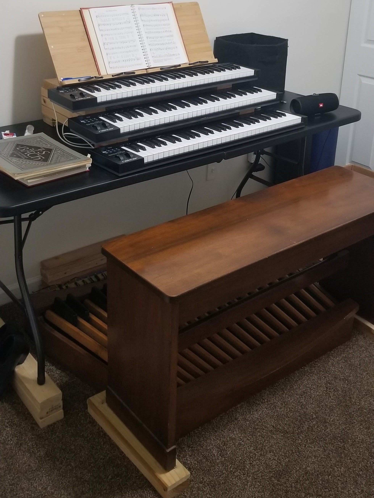

Building a Digital Organ
(on a grad student budget)I developed an interest in organ playing in college, but when I moved to Ohio for graduate school, I lost access to a practice instrument. As commercially available digital organs were outside my budget as a student, I began to research DIY options for a home instrument. This is what I came up with:
Components:
- 6-foot folding table
- 3 cheap MIDI keyboards
- Pedalboard salvaged from an old home organ
- Pedalboard MIDI conversion kit from MIDI Boutique
- Software: GrandOrgue, run on my laptop